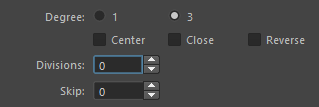
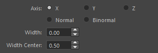
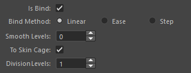
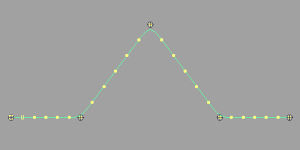
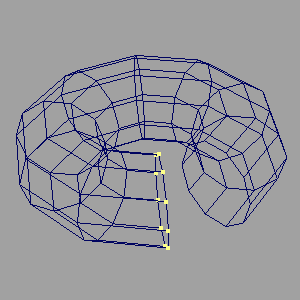

選択したトランスフォームノードに対して、NURBS カーブを作成します。
選択したトランスフォームノードに対して、NURBS カーブ ( 以下、カーブ ) を作成し、そのカーブを基準に ロフトされた NURBS サーフェス ( サーフェース ) やメッシュを作成します。
また、ジョイントノードを選択していた場合は、オプションにより作成されたオブジェクトをスムースバインドすることができます。
専用のメニューか、以下のコマンドでツールを起動します。
import faketools.tools.curveSurface_creator
faketools.tools.curveSurface_creator.show_ui()
Select Type を Selected ( 選択したノード間に作成 ) か Hierarchy ( 選択したノードの階層構造毎に作成 ) のどちらかを選択します。Object Type から作成するオブジェクトの種類を選択します。Create ボタンを押すことでカーブやサーフェスが作成されます。主なオプションは、以下四つの項目に分かれます。

Selected : 選択したノード間に作成します。Hierarchy : 選択したノードの階層構造毎に作成します。Curve : カーブを作成します。Surface : カーブを基準にロフトされたサーフェスを作成します。Mesh : カーブを基準にロフトされたメッシュを作成します。カーブの作成時に設定するオプションです。

サーフェース及びメッシュの作成時に設定するオプションです。objectType が Surface か Mesh の場合のみ有効です。

X : 選択したノードの X 軸方向にサーフェースを作成します。Y : 選択したノードの Y 軸方向にサーフェースを作成します。Z : 選択したノードの Z 軸方向にサーフェースを作成します。Normal : カーブの法線方向にサーフェースを作成します。Binormal : カーブの従法線方向にサーフェースを作成します。オブジェクトを作成後、そのオブジェクトを選択したノードでスムースバインドする際のオプションです。
選択したノードがジョイントノードである場合のみ有効です。

Is Bind
Bind Method
Linear : リニアウェイトでバインドします。

Ease : イーズインアウトウェイトでバインドします。

Step : ステップウェイトでバインドします。

Smooth Levels
Bind Method でのウエイト設定後、ウエイトをスムースにするレベルを指定します。To Skin Cage
objectType が Surface の時のみ有効です。Division Levels
To Skin Cage がオンの時、スキンケージの分割数を指定します。カーブを作成/編集する際に使用するコマンドが格納されています。


